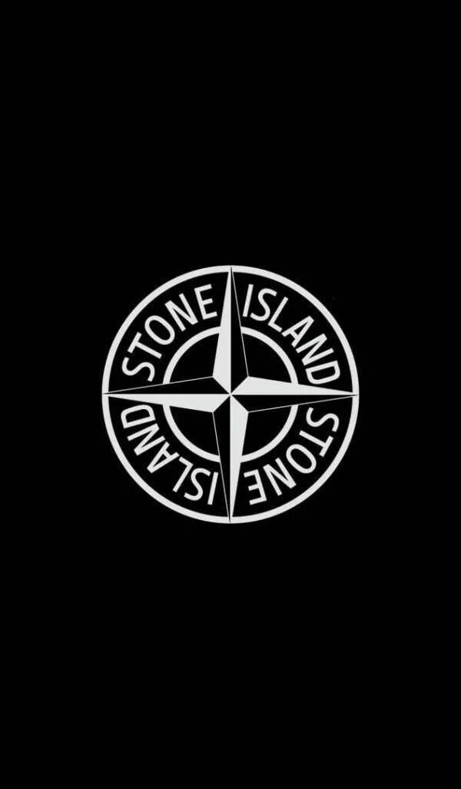

Stone Island
Founded: 1982 • Origin: Ravarino, Italy
Stone Island is an Italian luxury men's apparel brand founded in 1982 by Massimo Osti. Known for its compass patch logo and fabric innovation, the label became a cult favorite among European football subcultures and later global streetwear.
History
Founded by designer Massimo Osti as a diffusion line of C.P. Company. Its hallmark was garment-dyed fabrics and military inspiration. The brand's famous compass patch, usually buttoned to the left arm, symbolizes exploration and function.
Timeline / Milestones
- 1982: Founded by designer Massimo Osti as a diffusion line of C.P. Company. Its hallmark was garment-dyed fabrics and military inspiration.
- 1993: Carlo Rivetti and the Sportswear Company acquired the brand, expanding its global profile.
- 2000s: Stone Island became tied to UK football casuals, grime music culture, and global streetwear icons.
- 2017: 30% stake acquired by investment firm Carlyle Group, boosting expansion.
- 2020: Moncler S.p.A. purchased Stone Island for €1.15 billion, integrating into its luxury group.
Identity
Stone Island is recognized for dye experiments, reflective materials, and heat-sensitive textiles. Its aesthetic fuses military and utilitarian design with Italian tailoring precision.